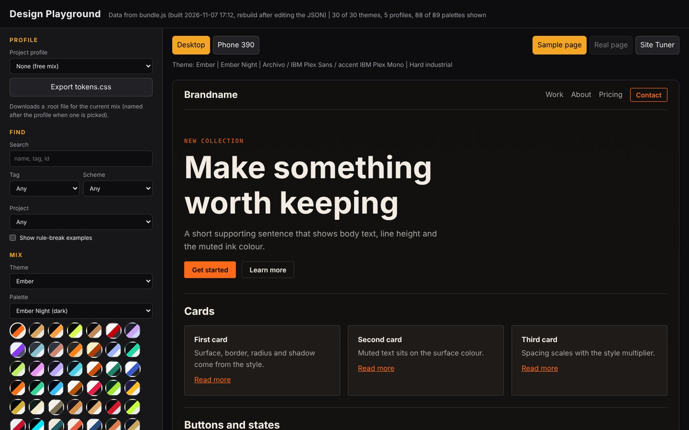
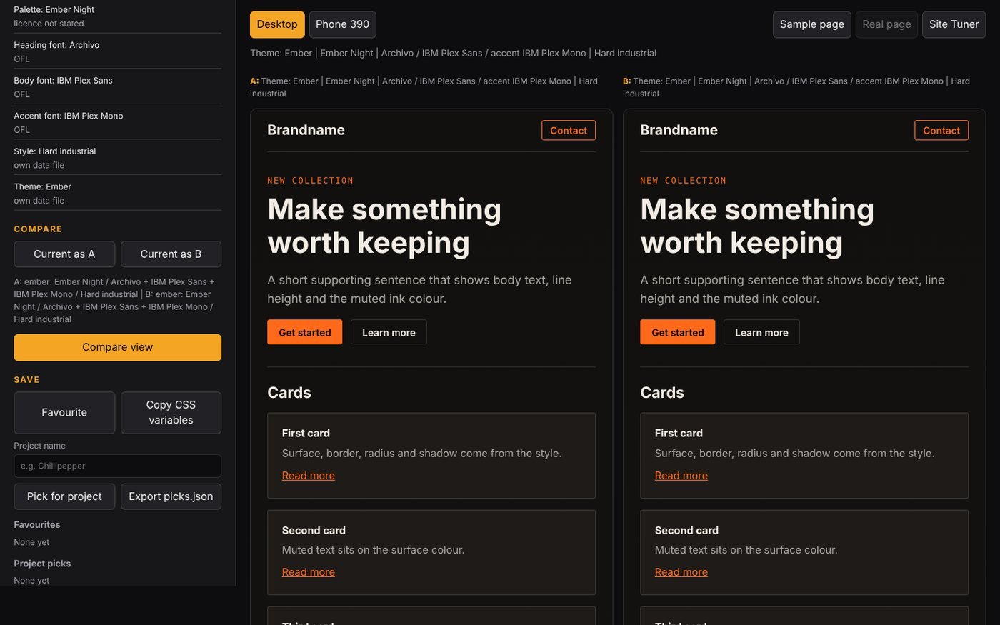
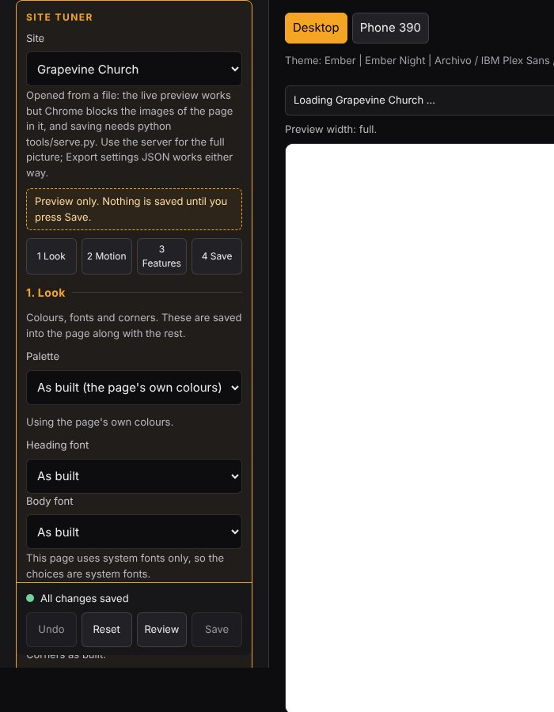

Tool · Front end · Built with my AI agents
Design Playground and Site Tuner
In progress
Every new site started with the same hour of picking colours and fonts. I built a tool that turns those decisions into a few clicks, saves the good combinations, and lets me tune my live sites without touching the code by hand.

01 · What it does
Design decisions in one place
- Mix: theme, palette, heading, body and accent fonts, and a style (corners, shadows, spacing).
- Check: live WCAG AA contrast check, a type scale specimen and motion preview.
- Licences: every font and palette shows its licence, so nothing unusable slips into a client site.
- Compare: save any mix as A or B and view them side by side.
- Keep: favourite a mix, pick it for a project, copy the CSS variables or export a tokens.css file.

02 · Site Tuner
Tune a real site, safely
The Site Tuner loads one of my actual websites and steps through Look, Motion and Features. Every change is preview-only until I press Save; before saving I can review exactly what will change in the file, undo, or reset to how the page was built.

03 · How it was built
I wrote the requirements and acceptance tests, and my agent team built it in small tasks. Each task went through a reviewer and a privacy check before I approved it. My job was the product decisions: what it should do, what "done" means, and what to cut.
Honest bug note: the export button once fired the same download about 16 times. I found it, cleaned up, and logged the fix as a task.